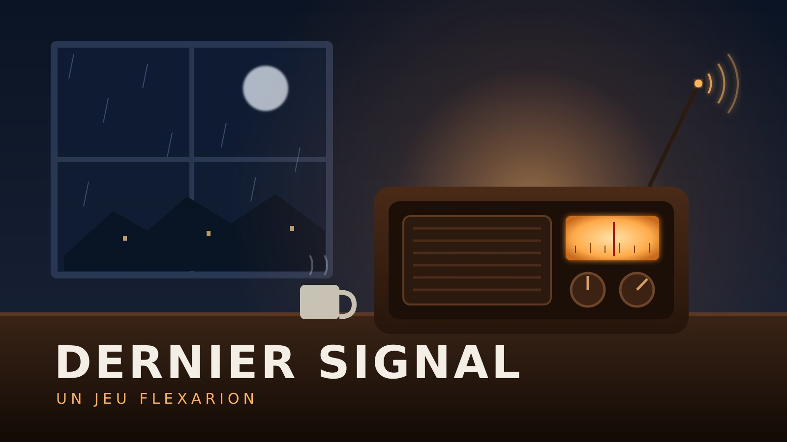

Emotional Game Award 2023 : le studio aixois Flexarion sacré avec Dernier Signal
Le studio indépendant aixois Flexarion a remporté l'Emotional Game Award 2023 avec Dernier Signal, un jeu indé d'aventure narratif qui raconte une seule nuit, au bout d'un poste de radio.

C'est une petite équipe d'Aix-en-Provence qui a créé la surprise vendredi soir. Flexarion, studio indépendant de jeux vidéo à Aix-en-Provence, a remporté l'Emotional Game Award 2023, le prix qui récompense chaque année le jeu vidéo procurant les émotions les plus fortes. Face à des studios bien plus installés, le jury a choisi à l'unanimité Dernier Signal, un jeu indépendant réalisé par quatre jeunes développeurs.
Dernier Signal, un jeu indé d'aventure centré sur le récit
Pas d'explosions ni de science-fiction dans Dernier Signal : juste une histoire. Le joueur incarne Jeanne, opératrice dans une petite station de radio, pendant la nuit où une tempête coupe la ville du reste du monde. Les appels arrivent les uns après les autres, et c'est à elle de décider qui elle écoute, qui elle aide, et ce qu'elle choisit de transmettre.
Ce jeu d'aventure narratif mise tout sur l'écriture, les voix et l'ambiance sonore. Chaque appel est une petite histoire, et c'est leur accumulation qui finit par bouleverser le joueur.
« Un jeu où chaque silence pèse plus lourd qu'un mot. »Extrait de la délibération du jury de l'Emotional Game Award 2023
Quatre amis d'Aix-en-Provence derrière le studio Flexarion
Derrière Flexarion, on trouve Lohann Balbas, Y. D., I. A. et H. B., quatre amis rencontrés à l'université d'Aix-Marseille. Ils ont développé Dernier Signal dans une ancienne imprimerie du centre d'Aix. « Nous voulions un jeu qui fasse ressentir quelque chose de vrai, sans artifices », explique Y. D., directrice artistique et créative du studio. L'équipe raconte cette aventure sur la page consacrée à l'histoire du studio Flexarion.
Et après ? Flexarion prépare déjà son prochain jeu
Ce prix donne des ailes au studio, qui travaille déjà sur un projet plus ambitieux : Deviation, le prochain jeu narratif à choix de Flexarion. Les curieux peuvent suivre les coulisses de son développement sur le devlog du studio.